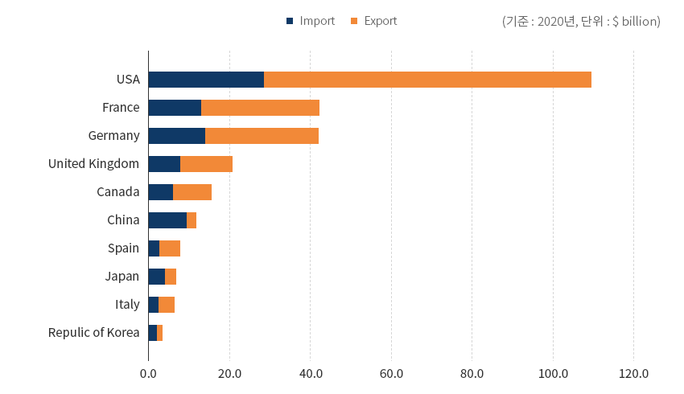
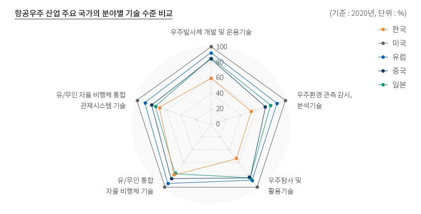
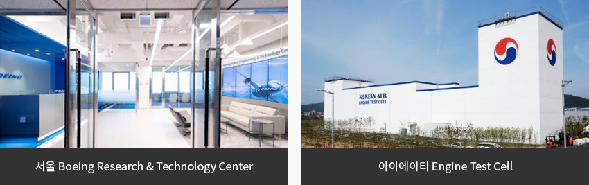
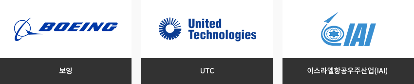
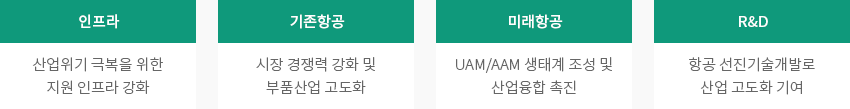
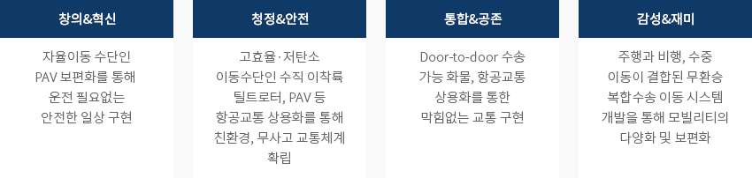
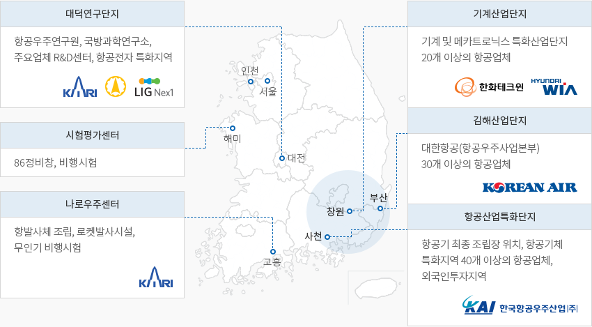
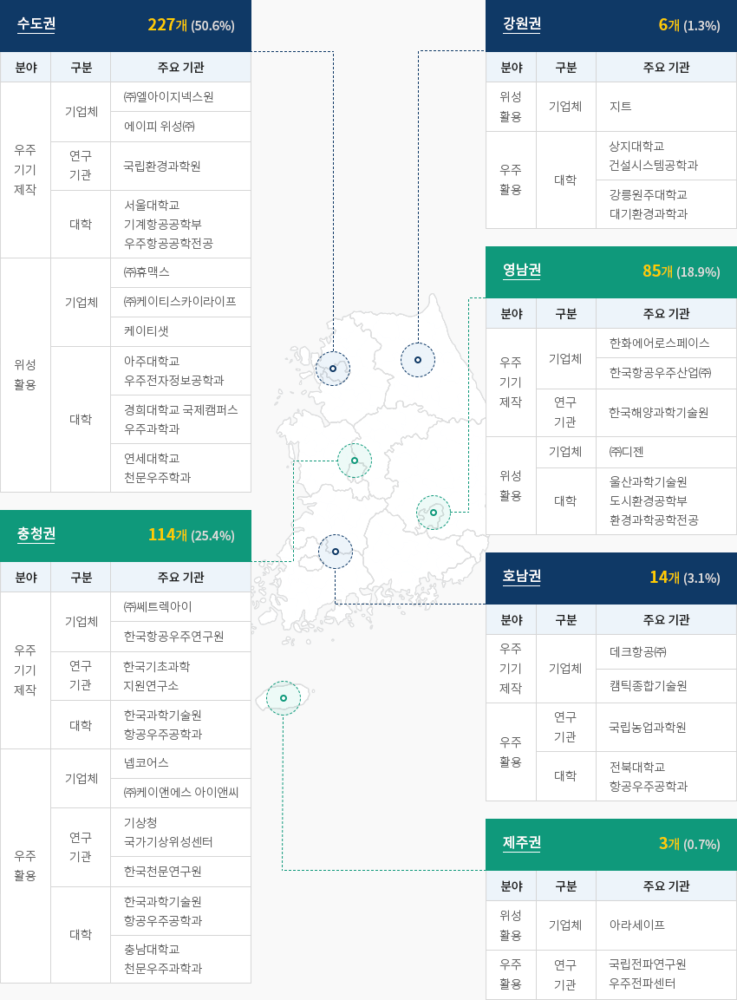

항공우주
- Home
- Why KOREA
- 산업
- 항공우주
항공우주
Aerospace
-
더 나은 도약을 위한 기술력 확보에 주력하는 한국 내용닫기더 나은 도약을 위한 기술력 확보에 주력하는 한국전 세계는 코로나-19 팬데믹 상황에 따른 경기 불안과 사회적 변화가 지속적으로 발생하였고,
Shut-down 등으로 인한 국제 이동 제한으로 주요국의 ’20년 무역규모는 ’19년 대비 35% 마이너스 성장을 보였다.
대한민국의 경우 -37%의 성장률을 보여 평균을 밑도는 수준이나, 중국(-49%), 일본(-44%), 프랑스(-43%)에 비해 하락세가 낮다."항공우주 산업 주요 국가 무역규모"(기준 : 2020년, 단위 : $ billion)- USA
- France
- Germany
- United Kingdom
- Canada
- China
- Spain
- Japan
- Italy
- Repulic of Korea
 ※ 출처 : UN Comtrade’20년 기준 주요 국가의 핵심기술 분야별 기술수준 비교 결과, 기술수준이 가장 높은 미국(100%)과 비교하여
※ 출처 : UN Comtrade’20년 기준 주요 국가의 핵심기술 분야별 기술수준 비교 결과, 기술수준이 가장 높은 미국(100%)과 비교하여
대한민국의 기술수준은 평균 64.3% 수준으로, ’18년과 비교하여 3.4%p 상승하였다.- ‘유/무인 통합 자율 비행체 기술’ 분야에서 ’18년 70.0%에서 ’20년도에는 10%p 상승한 80.0% 수준
- ‘유/무인 자율 비행체 통합 관제시스템 기술’ 분야에서 ’18년 65.0%에서 ’20년도에는 5%p 상승한 70.0% 수준
주요 국가들에 비하여 무역규모가 작지만 기술력 확보에 중점적으로 투자하여(전체 투자금액 중 40% 수준)
기술격차가 무역규모 차이(미국의 3.5% 수준)에 비하여 비교적 낮은 격차를 보이고 있다."한국 내 주요 전방산업 현황"항공우주 산업 주요 국가의 분야별 기술 수준 비교 (기준 : 2020년, 단위 : %)- 우주발사체 개발 및 운용기술
- 우주환경 관측 감시, 분석기술
- 우주탐사 및 활용기술
- 유/무인 통합 자율 비행체 기술
- 유/무인 자율 비행체 통합 관제시스템 기술
※ 출처 : KISTEP 2020년도 기술수준 평가"민간기업의 항공 및 우주산업 투자 현황"(단위: 백만 원)한국 자동차산업 위상 통계로 구분, 연도별 정보제공 구분 2017 2018 2019 항공 연구개발 147,199(37%) 196,194(36%) 184,875(35%) 시설/장비 106,593 174,995 179,876 토지/건물 88,724 69,839 137,570 기타 51,296 100,586 28,698 소계 393,812 541,614 531,019 우주 연구개발 163,072(89%) 151,576(84%) 133,760(50%) 시설/장비 17,082 27,422 133,047 교육훈련 1,196 1,046 1,552 기타 863 21 - 소계 182,212 180,065 268,359 총계 310,271 347,770 799,378 ※ 자료: 한국항공우주산업진흥협회, 우주산업실태조사(2020)’19년도 항공산업 민간기업의 연구개발 투자는 185억 원 수준으로(전체 투자 금액 중 35%),
수년째 30% 이상의 대규모 투자를 하고 있으며, 시설/장비 분야에 20% 이상 지속적인 투자를 통하여
기술개발과 시설/장비 구축에 집중하고 있다.국내 독자 기술 기반 발사체 누리호 시험발사(’21.10.21)에 따라 궤도 안착에는 실패했으나 목표 고도에 도달하였고,
이를 위한 75톤급 액체엔진 기술, 페어링 분리 기술 등 기반 기술을 확보하게 되었다.자력 발사 능력 확보는 국내 우주분야에서 뉴스페이스 시대를 앞당기는 발판을 마련하는 것으로,
실제 누리호 개발에 총 300여개의 기업이 참여하였다.이후 민간주도 우주개발 정부정책 기조에 따라 발사서비스 생태계 구축 등 시장 형성에 활력을 불어 넣을 것으로 기대하고 있다. -
높은 부가가치를 창출하는 한국 항공우주 산업 내용열기높은 부가가치를 창출하는 한국 항공우주 산업한국 항공우주산업은 2017년 이후 지속 성장하고 있다. 2019년 항공우주산업의 생산은 약 60억 달러로
전년대비 28% 증가하였으며, 수출은 약 28억 달러로 전년대비 8% 증가하였으며, 기체 및 엔진부품, 우주,
무인기 분야 등의 고른 성장으로 생산, 수출 모두 전년대비 증가한 것으로 분석된다.한국 항공우주산업 동향 표로 구분, 년도(2010 ~ 2018년) 정보제공 ※ 주1: 생산과 내수는 국내 항공제작업계(KAI, 대한항공, 한화에어로스페이스 등)의 실적
※ 주2: 수입은 MTI 통계, 수출은 P/O 및 계약 금액으로 집계’19년 항공산업의 인력은 16,637명으로 ’16년까지 꾸준한 성장세를 보이다가 ’17년 이후 유지하는
추세를 보이고 있으며, 우주산업의 경우 ’19년 6,643명으로 ’17년까지 큰 폭의 성장세를 보였으나
이후 유지하는 추세를 보이고 있다."항공우주 산업 고용 현황"항공우주 산업 고용 현황 통계로 구분, 연도별 정보제공 구분 2014 2015 2016 2017 2018 2019 항공 인력 14,318 14,777 15,986 16,859 16,911 16,637 성장률 - 5.0%p 9.0%p 1.0%p 4.0%p -1.6%p 우주 인력 4,257 5,456 5,988 6,708 6,610 6,643 성장률 - 28.0%p 10.0%p 12.0%p -1.0%p 0.5%p ※ 자료 : 산업통계시스템, 우주산업실태조사(2020) -
글로벌 항공우주 기업들의 한국 거점 확보 내용열기글로벌 항공우주 기업들의 한국 거점 확보미국 보잉사는 서울에 세계 최대 규모의 ‘보잉한국기술연구센터’ 설립하여
기술연구센터에서는 차세대 첨단 항공우주 분야 연구를 위하여 자율비행/인공지능/항공전자/
모빌리티플랫폼/스마트캐빈/스마트팩토리 분야의 인력을 채용하여 연구를 진행할 예정이다.
미국 보잉社과 대한항공의 합작으로 인천경제자유구역 영종지구에 항공운항훈련센터 건립하여
항공기 파일럿들의 조종 훈련 수행하고 있으며 대한항공과 엔진 제작업체인 미국 UTC의 합작사인
아이에이티社는 인천경제자유구역 영종지구에 항공엔진정비센터를 건립하여 항공기용 엔진(B777 등) 테스트를 수행하고 있다."한국 진출 글로벌 항공우주 주요 기업"
-
K-UAM 상용화로 항공우주 분야 산업체 진입 기회 확대 내용열기K-UAM 상용화로 항공우주 분야 산업체 진입 기회 확대산업통상자원부는 ’21년 3월 「항공산업발전 기본계획(’21~’30)」 발표를 통하여
항공산업 발전정책을 효율적이고 체계적으로 운영하기 위한 지원방향과 정책과제를 제시하였다.- 인프라 - 산업위기 극복을 위한 지원 인프라 강화
- 기존항공 - 시장 경쟁력 강화 및 부품산업 고도화
- 미래항공 - UAM/AAM 생태계 조성 및 산업융합 촉진
- R&D - 항공 선진기술개발로 산업 고도화 기여
국토교통부는 ’45년 미래사회 모습을 사회·기술·경제·환경·정치 등 각 분야별로 전망하여
정부가 지향할 4대 미래상 설정 후 정책 시사점 제시하였다.- 창의&혁신 - 자율이동 수단인 PAV 보편화를 통해 운전 필요없는 안전한 일상 구현
- 청정&안전 - 고효율·저탄소 이동수단인 수직 이착륙 틸트로터, PAV 등 항공교통 상용화를 통해 친환경, 무사고 교통체계 확립
- 통합&공존 - Door-to-door 수송 가능 화물, 항공교통 상용화를 통한 막힘없는 교통 구현
- 감성&재미 - 주행과 비행, 수중 이동이 결합된 무환승 복합수송 이동 시스템 개발을 통해 모빌리티의 다양화 및 보편화
UAM Team Korea는 「한국형 도심항공교통(K-UAM) 운용개념서 1.0」를 발간하여
첨단 교통의 혁신과 기술의 변화로 UAM 산업 발전의 이정표를 제시하였다."K-UAM 단계별 발전에 따른 주요 지표"K-UAM 단계별 발전에 따른 주요 지표로 항목, 초기(2025년~), 성장기(2030년~), 성숙기(2035년~) 정보제공 항목 초기(2025년~) 성장기(2030년~) 성숙기(2035년~) 기장 운용 On Board Remote 도입 Autonomous 도입 교통관리체계 UAM 교통관리서비스 제공자 역할 단계적 확대, 항공교통관제사 참여 단계적 축소 교통관리 자동화 수준 자동화 도입 자동화 주도 및 인적 감시 완전자동화 주도 회랑운영방식 고정형 회랑
(Fixed Corridor)고정형 회랑망
(Fixed Corridor Network)동적 회랑망
(Dynamic Corridor Network)항공통신망 상용이동통신(4G·5G), 항공음성통신 상용이동통신(5G·6G), 저궤도위성통신, C2 LINK 등 항법시스템 정밀위성항법 정밀위성항법 + 영상기반상대항법 복합상대항법 버티포트입지 및 형태 수도권 중심 버티포트 수도권 및 광역권 중심 버티포트 전국 확대 -
항공우주 산업 클러스터 및 지역분포 내용열기항공우주 산업 클러스터 및 지역분포항공산업은 경남 지역을 중심으로 주요 업체와 시험·평가 시설이 구축되어 있다.
사천에 항공산업 특화단지가 형성되어 KAI 등 주요 항공업체가 거점을 두고 있으며,
영천에 항공전자 MRO 클러스터를 형성하였다.’19년 기준 우주산업에 참여한 기관(기업, 연구기관, 대학 포함)은 총 449개로
주로 수도권과 충청권에 분포(341개, 75.9%)해 있다.수도권에는 위성체, 발사체 제작 등 다양한 우주 관련 기업(227개)들이 활동하고 있으며 충청권에는
㈜쎄트렉아이 등 위성 관련 주요 업체와 한국항공우주연구원이 거점을 형성,
영남권에는 한화에어로스페이스와 한국항공우주산업㈜이 우주기기 제작 분야 대기업이 위치하고 있다."항공산업 지역별 주요 기업 및 인프라"- 해미: 시험평가센터(86정비창, 비행시험)
- 대전: 대덕연구단지(항공우주연구원, 국방과학연구소 주요업체 R&D센터, 항공전자 특화지역)
- 고흥: 나로우주센터(항발사체 조립, 로켓발사시설, 무인기 비행시험)
- 창원: 기계산업단지(기계 및 메카트로닉스 특화산업단지 20개 이상의 항공업체)
- 부산: 김해산업단지(대한항공(항공우주사업본부) 30개 이상의 항공업체)
- 사천: 항공산업특화단지(항공기 최종 조립장 위치, 항공기체 특화지역 40개 이상의 항공업체, 외국인투자지역)
※ 출처: 한국항공우주산업진흥협회"우주산업 지역별 주요 기업 및 인프라"-
수도권 227개(50.6%)
우주산업 지역별 주요 기업 및 인프라(수도권) 표로 분야, 구분, 주요 기업 정보제공 분야 구분 주요 기업 우주 기기 제작 기업체 (주)엘아이지넥스원 에이피 위성(주) 연구 기관 국립환경과학원 대학 서울대학교 기계항공공학부 우주항공공학전공 위성 활용 기업체 (주)휴맥스 (주)케이티스카이라이프 케이티샛 대학 아주대학교 우주전자정보공학과 경희대학교 국제캠퍼스 우주과학과 연세대학교 천문우주학과 -
강원권 6개(1.3%)
우주산업 지역별 주요 기업 및 인프라(강원권) 표로 분야, 구분, 주요 기업 정보제공 분야 구분 주요 기업 위성활용 기업체 지트 우주활용 대학 상지대학교 건설시스템공학과 강릉원주대학교 대기환경과학과 -
충청권 114개(25.4%)
우주산업 지역별 주요 기업 및 인프라(충청권) 표로 분야, 구분, 주요 기업 정보제공 분야 구분 주요 기업 우주기기 제작 기업체 (주)쎄트렉아이 한국항공우주연구원 연구기관 한국기초과학 지원연구소 대학 한국과학기술원 항공우주공학과 우주활용 기업체 넴코어스 (주)케이앤에스 아이앤씨 연구기관 기상청 국가기상위성센터 한국천문연구원 대학 한국과학기술원 항공우주공학과 충남대학교 천문우주과학과 -
영남권 85개(18.9%)
우주산업 지역별 주요 기업 및 인프라(영남권) 표로 분야, 구분, 주요 기업 정보제공 우주기기 제작 기업체 한화에어로스페이스 한국한공우주산업(주) 연구기관 한국해양과학기술원 위성활용 기업체 (주)디젠 대학 울산과학기술원 도시환경공학부 환경과학공학전공 -
호남권 14개(3.1%)
우주산업 지역별 주요 기업 및 인프라(호남권) 표로 분야, 구분, 주요 기업 정보제공 분야 구분 주요 기업 우주기기제작 기업체 데크항공(주) 캠틱종합기술원 우주활용 연구기관 국립농업과학원 대학 전북대학교 항공우주공학과 -
제주권 2개(0.6%)
우주산업 지역별 주요 기업 및 인프라(제주권) 표로 분야, 구분, 주요 기업 정보제공 분야 구분 주요 기업 위성활용 기업체 아라세이프 우주활용 연구기관 국립전파연구원 우주전파센터
※ 자료: 우주산업실태조사(2020)
※ 자료협조 : 한국항공우주연구원


Invest KOREA담당자
항공우주 PM
정보영
기간산업유치팀
T.+82-2-3460-7888
입지정보 추천
산업단지 정보
[경상남도 사천시] 사천제1일반산업단지
세부정보 바로가기를 클릭하시면 산업단지공단의 Smart K-Factory 서비스의 해당 정보 화면으로 이동합니다.
-
단지명사천제1일반산업단지
-
최초지정일1991.12.28
-
지정면적(km2)2,545,259
-
관리기관경상남도, 사천시,한국산업관리공단
-
인근철도역진주역
-
역과 거리(km)14
-
인근공항사천공항
-
공항과의 거리(km)5
-
공업용수 공급용량(톤/일)11000(㎥/일)[공업용수/생활용수 구분 없음]
-
소속 기초 지자체경상남도 사천시
-
인구수(명)111,440
산업단지 정보
[경상북도 영천시] 고경일반산업단지
세부정보 바로가기를 클릭하시면 산업단지공단의 Smart K-Factory 서비스의 해당 정보 화면으로 이동합니다.
-
단지명고경일반산업단지
-
최초지정일2009.12.24
-
지정면적(km2)1,565,077
-
관리기관경상북도 영천시
-
인근철도역영천역
-
역과 거리(km)10
-
인근공항대구국제공항
-
공항과의 거리(km)52
-
공업용수 공급용량(톤/일)2053(㎥/일)
-
소속 기초 지자체경상북도 영천시
-
인구수(명)101,523
산업단지 정보
[부산광역시 기장군] 정관농공단지
세부정보 바로가기를 클릭하시면 산업단지공단의 Smart K-Factory 서비스의 해당 정보 화면으로 이동합니다.
-
단지명정관농공단지
-
최초지정일1987.02.25
-
지정면적(km2)258,083
-
관리기관부산광역시 기장군
-
인근철도역부산역
-
역과 거리(km)31
-
인근공항김해국제공항
-
공항과의 거리(km)35
-
공업용수 공급용량(톤/일)400(㎥/일)
-
소속 기초 지자체부산광역시 기장군
-
인구수(명)172,288
산업단지 정보
[경상남도 밀양시] 사포일반산업단지
세부정보 바로가기를 클릭하시면 산업단지공단의 Smart K-Factory 서비스의 해당 정보 화면으로 이동합니다.
-
단지명사포일반산업단지
-
최초지정일2004.12.16
-
지정면적(km2)745,994
-
관리기관경상남도 밀양시
-
인근철도역밀양역
-
역과 거리(km)4
-
인근공항김해국제공항
-
공항과의 거리(km)51
-
공업용수 공급용량(톤/일)1996(㎥/일)
-
소속 기초 지자체경상남도 밀양시
-
인구수(명)105,026
산업단지 정보
[경상남도 고성군] 마동농공단지
세부정보 바로가기를 클릭하시면 산업단지공단의 Smart K-Factory 서비스의 해당 정보 화면으로 이동합니다.
-
단지명마동농공단지
-
최초지정일2007.08.06
-
지정면적(km2)287,799
-
관리기관경상남도 고성군
-
인근철도역마산역
-
역과 거리(km)47
-
인근공항사천공항
-
공항과의 거리(km)38
-
공업용수 공급용량(톤/일)-
-
소속 기초 지자체경상남도 고성군
-
인구수(명)26,867
산업단지 정보
[경상남도 사천시] 두량전문농공단지
세부정보 바로가기를 클릭하시면 산업단지공단의 Smart K-Factory 서비스의 해당 정보 화면으로 이동합니다.
-
단지명두량전문농공단지
-
최초지정일2004.06.10
-
지정면적(km2)118,161
-
관리기관경상남도 사천시
-
인근철도역진주역
-
역과 거리(km)9
-
인근공항사천공항
-
공항과의 거리(km)5
-
공업용수 공급용량(톤/일)-
-
소속 기초 지자체경상남도 사천시
-
인구수(명)111,401